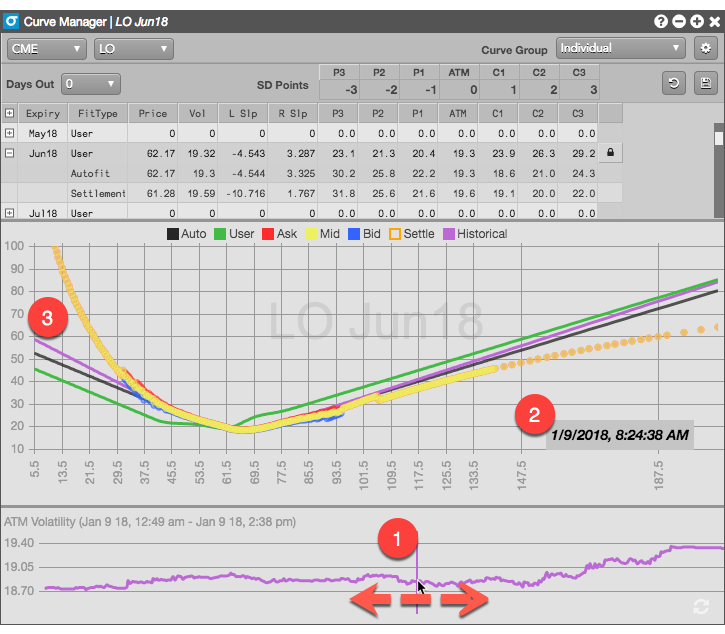

TT stores the auto-fit volatility curve data at regular intervals. The bottom pane of the widget displays a graph of the at-the-money volatility for the current and previous trading sessions.
The ATM Volatility graph displays the at-the-money values for the period from 12:01 AM on the previous trading day to the present time.
